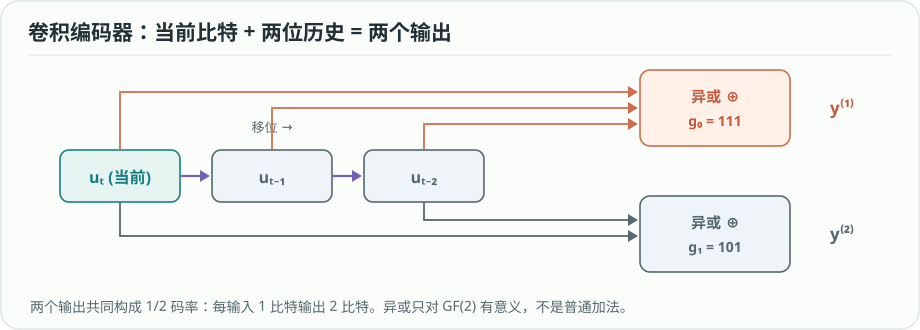
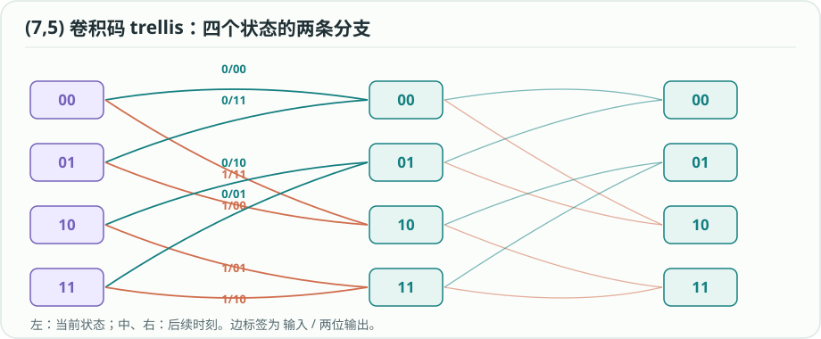
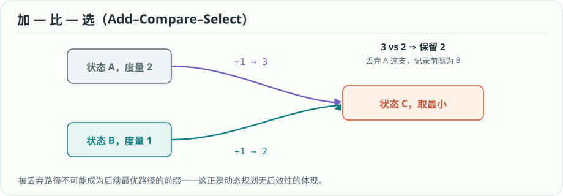

为什么要把纠错码做成一台持续运行的机器？
上一章的循环码、以及汉明码，都是分组码：把数据切成固定长度的块，逐块独立处理。它们在光纤、磁盘、内存上表现出色，但它们的纠错能力有一个硬上限——一块里错得太多就无计可施。
卷积码（convolutional code）换了一个思路：输出不对某个“块”负责，而是持续依赖最近的输入历史，像一台不停转动的机器。它配合 Viterbi 算法得到一个很漂亮的结果：只要噪声不是太狠，就能在整条序列上找到最可能被发送的那一条。代价是译码要看到一段连续比特才能给结论。
卷积码编码器就是一台有限状态机
看一个最经典的例子：码率 1/2、约束长度 K=3 的编码器。它有两个记忆位，状态写作 sₜ=(uₜ₋₁, uₜ₋₂)，共 4 种。每个输入比特 uₜ 同时送进两组抽头，产生两个输出比特：
这两组抽头就是生成多项式：第一个输出对应 g₀=111₂（八进制 7），第二个对应 g₁=101₂（八进制 5）。下标 0、1、2 分别对应 uₜ、uₜ₋₁、uₜ₋₂。注意：编码器输出是 {0,1} 硬比特，而不是软信息；这个区别在译码时很重要。
| 参数 | 含义 | 本例取值 |
|---|---|---|
| k / n | 每步输入 / 输出比特数 | 1 / 2 |
| K（约束长度） | 影响单次输出的输入比特数 | 3 |
| m = K−1（记忆） | 寄存器中的历史状态位数 | 2 |
| 状态数 | 2m | 4（00、01、10、11） |

发送完整消息后，通常再补 m=2 个 0（称为 尾部归零 / tail bits），把状态逼回 00。这让每条合法路径都从 00 出发、在 00 结束，译码时不必猜测初态和终态，代价是损失一点码率。
网格图把状态随时间展开
把“时刻”横着排开，把 4 个状态竖着排开，每一步画一条从当前状态到下一状态的边，边上标注 输入 / 输出，得到的就是网格图（trellis）。因为下一状态与输出只由当前状态和输入决定，网格是一张高度规则的图。
| 当前状态 (uₜ₋₁uₜ₋₂) | 输入 0 → 输出 / 下一状态 | 输入 1 → 输出 / 下一状态 |
|---|---|---|
| 00 | 00 / 00 | 11 / 10 |
| 01 | 11 / 00 | 00 / 10 |
| 10 | 10 / 01 | 01 / 11 |
| 11 | 01 / 01 | 10 / 11 |

于是问题变成了：已知接收序列，网格上哪一条路径最可能是发送路径？这里要区分两种“度量”。把每个输出比特看成独立二元硬判决，则用汉明距离累加；若保留匹配滤波后的实数样本（软判决），则用欧氏距离累加，软判决通常能多拿约 2 dB 左右增益（具体数值取决于信道与量化）。
Viterbi：每个状态只保留一条最优路径
直接枚举会枚举 2ᵀ 条路径。Viterbi 算法的关键观察是：到达某个状态的最优路径，其前缀也一定是最优的（动态规划的无后效性）。所以在每一时刻、每个状态，只需保留一条度量最小的幸存路径。
这里 d(·,·) 是分支度量（硬判决为汉明距离）。四步循环：
- 加（Add）：前驱度量加上本步分支距离。
- 比（Compare）：到同一状态的两条候选路径比大小。
- 选（Select）：留下较小者，并记下它的前驱状态与输入位。
- 回溯（Traceback）：走完全序列后，从最小度量的终态沿记录一步步退回起点。

把编码器与译码器写成可测试代码
本仓库的 Python 样例用 g₀=7、g₁=5 的 (2,1,3) 卷积码实现编码与硬判决 Viterbi，并用固定算例断言。消息 1011 加上两位尾部归零得到 101100，编码为 1110 0001 0111。
from examples.channel_coding import conv_encode, viterbi_decode
msg = [1,0,1,1,0,0] # 4 位消息 + 2 位尾部归零
tx = conv_encode(msg)
assert tx == [1,1,1,0,0,0,0,1,0,1,1,1]
rx = tx[:]; rx[3] ^= 1 # 翻转第 4 个输出比特
assert viterbi_decode(rx) == msg # 单比特翻转被纠正
assert viterbi_decode(rx)[:4] == [1,0,1,1]固定消息 1011（后缀 2 位归零），硬判决汉明度量；交互只研究单比特翻转，不声称纠正任意多错。
把 4 步换成 T 步，复杂度为 O(T·2K−1)：每时刻对 2K−1 个状态各做两次加法与一次比较，随 K 指数增长但并不随 T 指数增长——这正是它能实用的原因。
卷积码的真实应用与代价
卷积码 + Viterbi 在过去半个世纪里主导了大量系统，其中很多至今仍在服役。
| 系统 | 基础码率 | 约束长度 K | 生成多项式（八进制） |
|---|---|---|---|
| Voyager 深空（1977） | 1/2 | 7 | 171, 133（外接 RS 码） |
| GSM 语音信道 | 1/2 | 5 | 23, 33 |
| IEEE 802.11a/g WiFi | 1/2 → 3/4 | 7 | 133, 171（打孔提升码率） |
| DVB-S 卫星电视 | 1/2 → 7/8 | 7 | 133, 171（打孔） |
| IS-95 CDMA | 1/2 | 9 | 753, 561 |
表中“打孔（puncturing）”指按固定图样删掉一部分编码输出位，把码率从 1/2 推到 2/3、3/4 甚至更高；代价是冗余变少、纠错能力下降。这是工程上在同一块编码硬件里切换码率的常用手法。
另外，当信道是一段突发错误（例如深空衰落）时，单靠卷积码并不够，通常先用卷积码做内码，再用 Reed–Solomon 做外码，中间用交织把突发打散——Voyager 就是这种经典级联。下一章换一个完全不同的目标：不再保护完整性，而是保护机密性。
来源与延伸阅读
- A. J. Viterbi (1967), Error Bounds for Convolutional Codes and an Asymptotically Optimum Decoding Algorithm：Viterbi 算法的原始论文。
- G. D. Forney (1973), The Viterbi Algorithm：算法综述与应用。
- MIT 6.441 (2016) Convolutional Codes：网格图与 Viterbi 译码的课程推导。
- Cover & Thomas, Elements of Information Theory：序列译码与信道编码的背景。